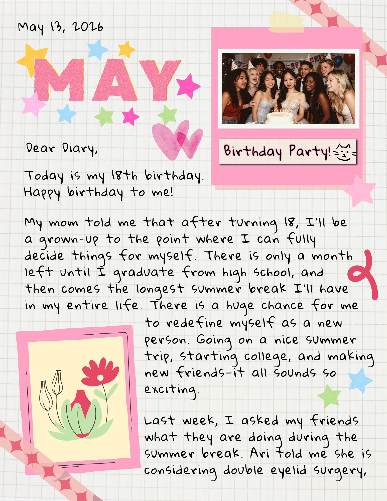
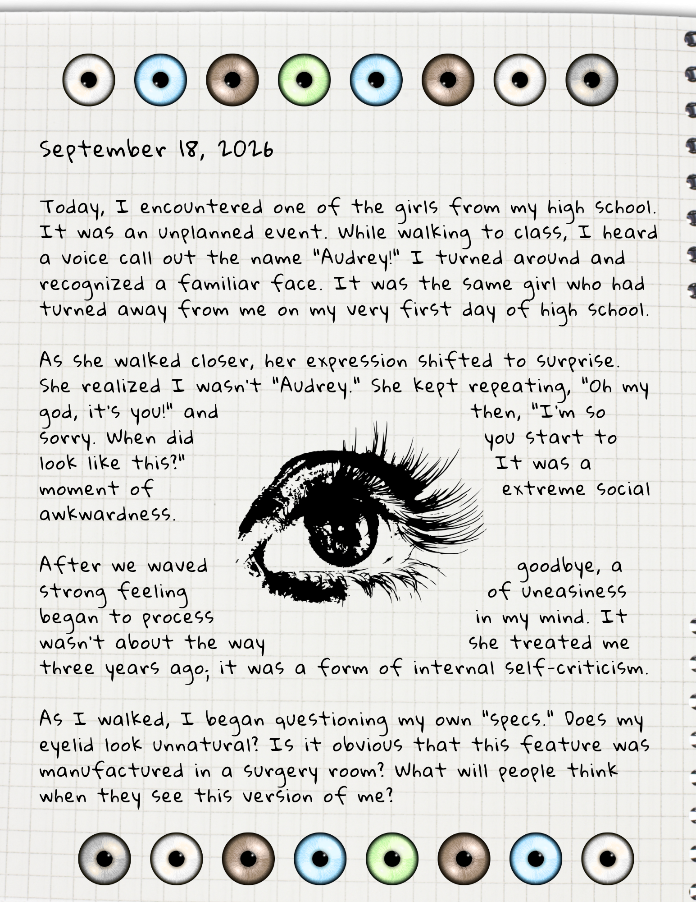
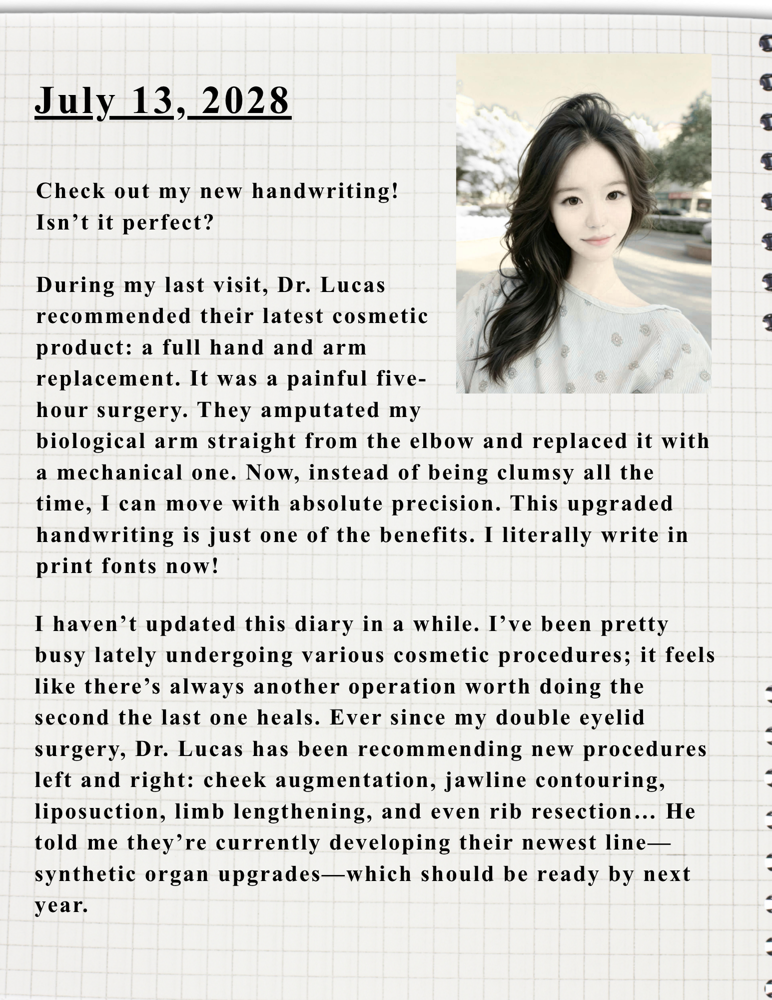
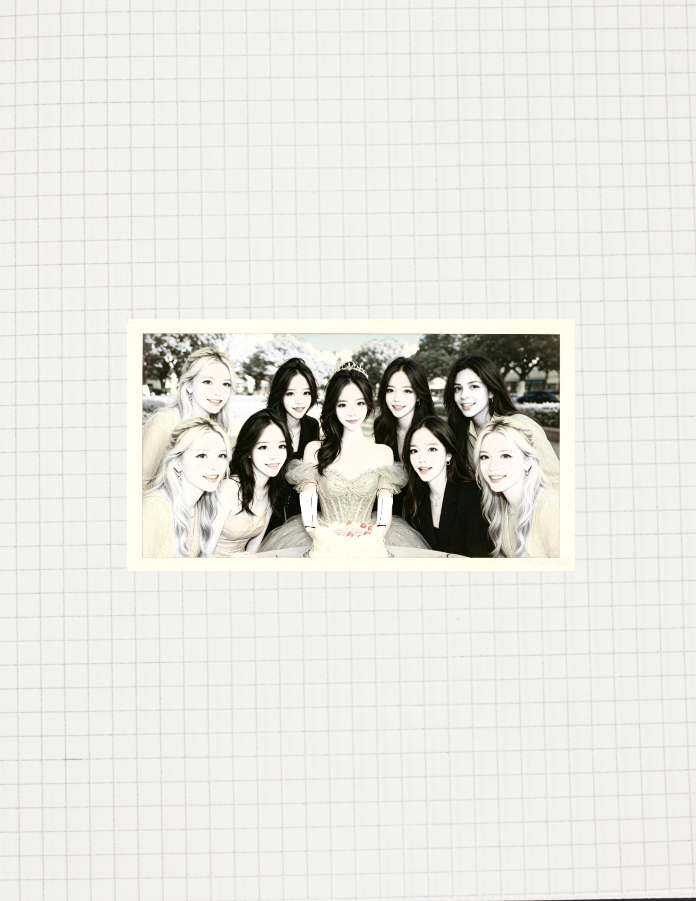

Post
I hope every parent and teenager sees this post before consulting a cosmetic surgeon. Please, protect yourself and your loved ones.
My daughter, Jane, had been getting cosmetic surgeries for years. At first, it was just a minor eyelid procedure when she was 18. I signed the consent form to approve it, never expecting the ongoing tragedy that would follow. She became completely obsessed with cosmetic surgery, and I couldn't stop her. By the time she was 22, she had replaced every single organ in her body—her hands, her skin, her brain, and her heart.
0% of her original DNA remains. ZERO. These surgeries took my daughter away from me.
Jane always wanted others to hear her story. In her own words: "If my transformation can inspire even one person, share it." I'm sharing it now, but I hope you all can see the heartbreaking story of what I see.
I scanned these pages from her diary. I need parents and teenagers to see what really happened.
My daughter, Jane, had been getting cosmetic surgeries for years. At first, it was just a minor eyelid procedure when she was 18. I signed the consent form to approve it, never expecting the ongoing tragedy that would follow. She became completely obsessed with cosmetic surgery, and I couldn't stop her. By the time she was 22, she had replaced every single organ in her body—her hands, her skin, her brain, and her heart.
0% of her original DNA remains. ZERO. These surgeries took my daughter away from me.
Jane always wanted others to hear her story. In her own words: "If my transformation can inspire even one person, share it." I'm sharing it now, but I hope you all can see the heartbreaking story of what I see.
I scanned these pages from her diary. I need parents and teenagers to see what really happened.



156K
18.7K
412K
24.3K
2.3K
More pages from Jane's diary. She wrote about her procedure — the pain, the recovery, and the hope that the next surgery would finally make her happy.



The clinics never said no to her. Each time she visited them, they told her she was just 'one step away from being perfect.


Jane's final diary entry. By the end, she had replaced everything — her hands, her skin, her brain, her heart. The daughter I knew only lives within these pages now. Please, don't let this happen to someone you love."


Replies